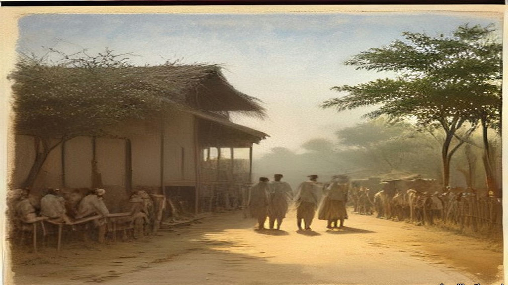
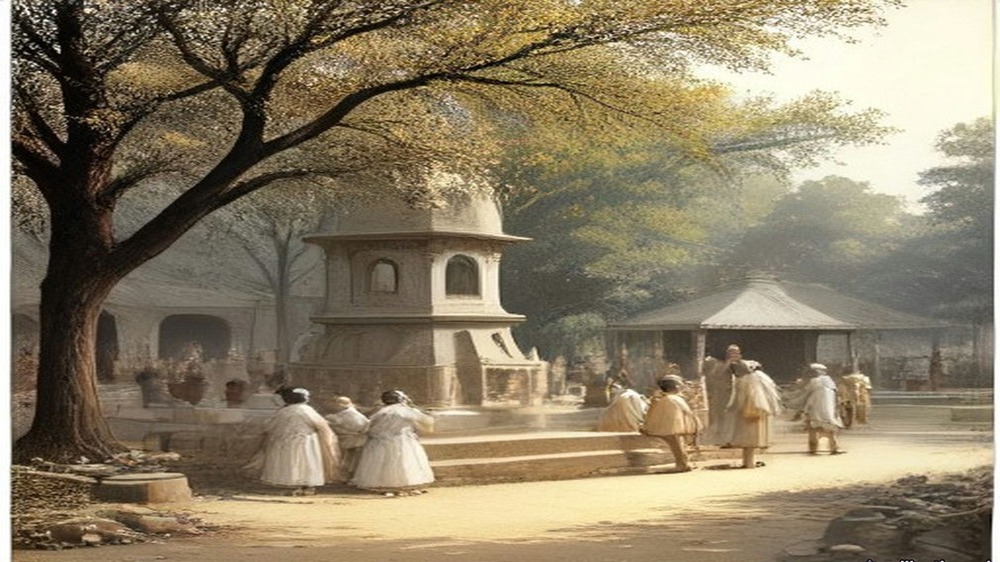
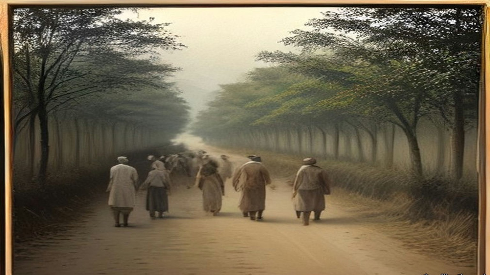
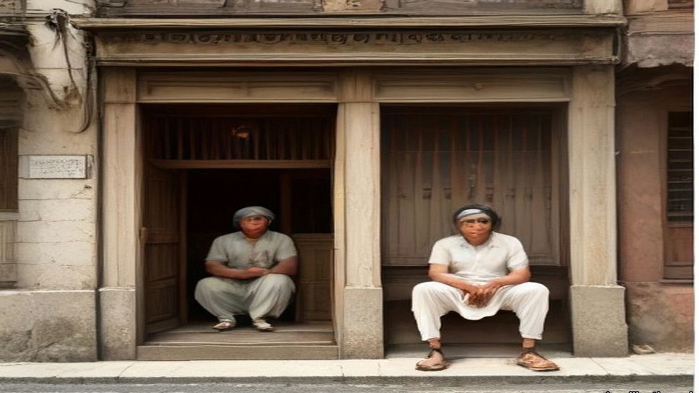
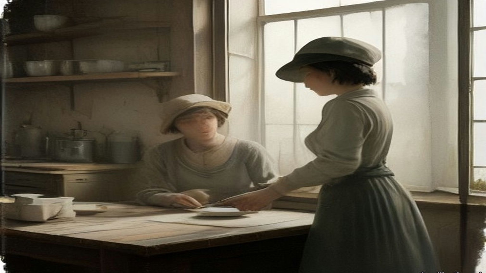
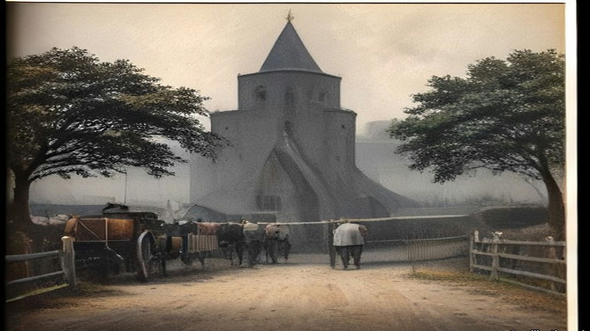

Chapter 27
A Pinch of Salt at Dandi, 1907–1938
Phoenix in Natal, the Kildonan Castle, Sabarmati, Dandi, Dharasana, Westminster, Lancashire and Dublin, September 1907 to April 1938
The press room of Indian Opinion, Phoenix, Natal, September 1907
Bhai, the type for Gujarati is small, small. You pick it with the fingertips from the case, one letter, one letter, and the case is in the shed with the tin roof, and in September already the tin is ticking from the sun by ten o'clock. Ink on the fingers, ink in the nails. My wife says, you are eating ink also with the rotli. What to do? The paper must go out Saturday.
The editor's copy comes from Johannesburg in his own hand, the Gujarati running fast, fast, as if the pen is late for a train. This week one article is about Ireland. Ireland, I am saying to myself, where is Ireland? Near England only, the foreman says, a small island, and the people there also are under the English.
I set it line by line. Nowadays the people of Ireland are striving hard for their rights. The editor writes that the Irish count for nothing in their own land, and that once they go out of Ireland they enjoy rights quite like those of Englishmen. Same like us, I am thinking, only the other way round. Our people go out of India and then only the trouble starts.
Then the new word. Sinn Fein. He has written it in our letters, and next to it he has written what it means, and the foreman reads it over my shoulder and laughs one short laugh through the nose. In the English translation of that page, later, in the big book, it says the movement "is called Sinn Fein, which, literally translated into Gujarati, means exactly our Swadeshi movement."
Swadeshi. Our own things. Our own cloth.
The editor's line goes on: "Till now, Irishmen favoured violent action." The tenants, he writes, often used violence against the foreign landlords. Now the Irish leaders want the Irish members to walk out of the British Parliament, the Irish to stop taking their quarrels to the English courts, "and boycotting British goods even at the cost of hardship to themselves." So that "without any violent struggle taking place the British would ultimately be obliged, or might agree, to grant Home Rule to Ireland, or would quit Ireland."
Then something about Hungary, and a man called Dick who told the Hungarians not to pay taxes to Austria. Then the Transvaal. None can imprison thousands of men or deport them. I set that line and my hand is stopping a moment over the case, because my cousin in Johannesburg is one who has not taken the permit, and the registration office there sits empty, and every week someone says, now they will come for him.
The issue is dated the seventh of September. I lock the forme. Tight, tight, the quoins, so that no letter falls when the press comes down. Ireland goes into the press with the advertisements for rice and for ghee, and comes out the other side wet.

* * *
The Kildonan Castle, the Atlantic, south of Madeira, November 1909
Gandhi had spent four months in London with the Transvaal Indian deputation. "I have read much, I have pondered much," he wrote afterwards, "I discussed things with as many of my countrymen as I could. I met, too, as many Englishmen as it was possible for me to meet." On the voyage home he wrote it down. He wrote in Gujarati, a dialogue between a Reader who wanted Home Rule and an Editor who kept asking him what he meant by it. Some of the manuscript he wrote with his left hand. A page of the ninth chapter survives in it.
The Reader says that India must have its own navy and army, its own flag. "As is Japan, so must India be." The Editor answers him: "In effect it means this: that we want English rule without the Englishman. You want the tiger's nature, but not the tiger."
In the seventh chapter the Reader asks why India was lost. The Editor turns the question round. "The English have not taken India; we have given it to them. They are not in India because of their strength, but because we keep them." He goes back to the Company. "Who assisted the Company's officers? Who was tempted at the sight of their silver? Who bought their goods?" And then, of the men who said India was held by the sword: "The sword is entirely useless for holding India. We alone keep them." Napoleon, he wrote, is said to have called the English a nation of shopkeepers. "They hold whatever dominions they have for the sake of their commerce. Their army and their navy are intended to protect it."
The nineteenth chapter is about machinery. "When I read Mr. Dutt's Economic History of India, I wept," the Editor says. "It is difficult to measure the harm that Manchester has done to us. It is due to Manchester that Indian handicraft has all but disappeared." Then he stops himself. "But I make a mistake. How can Manchester be blamed? We wore Manchester cloth and this is why Manchester wove it."
The foreword is dated 22 November 1909, on board. The first twelve chapters ran in Indian Opinion on 11 December, the rest a week later, and the type was set at Phoenix. In January 1910 the dialogue came out as a booklet. On 24 March the Government of Bombay proscribed it.

* * *
Westminster, the India Office figures, 1913 to 1930
The cloth Gandhi wrote about can be counted in the India Office's own returns. In the financial year 1913–14 India imported 3,104,311,465 yards of cotton piece goods from the United Kingdom and 8,900,578 yards from Japan. William Wedgwood Benn, Secretary of State for India, put the figures in the Official Report on 4 May 1931, in a table under a question from Mr. Remer.
Salt was the other line, and it had been in the House for a long time. On 7 August 1913, in the debate on the Indian Budget in which Edwin Montagu announced the end of the opium revenue from China, Theodore Taylor, the member for the Radcliffe Division, spoke later in the debate. "My contention is that we have never had any moral right to inflict this drug upon China in order to make money for ourselves or for India," he said. "Personally, I can never forget that there is a salt tax in India, and by it we are taxing a very large number of very poor people, and so long as we do that there is every reason for economy in our military expenditure in India." He went on: "The people in India are very poor and we are their trustees, but our trusteeship for their welfare does not demand from us that we should inflict a wrong upon any other nation."
On 19 May 1930 Benn circulated the revenue of the Salt Department for three years. Rs. 6,69,81,053 in 1926–27. Rs. 6,63,17,979 in 1927–28. Rs. 7,59,92,742 in 1928–29. The department's whole expense, manufacture and the preventive service together, ran at a little over a crore and a quarter of rupees a year. Asked for the incidence of the salt tax on each head of the population, he answered in one line: "Between 4d. and 4½d." On 5 June he added that imported salt had been worth 146¾ lakhs of rupees in 1928–29, from Aden, Egypt, the United Kingdom, Germany, Spain and other places, and Indian production, by Government or by private makers under licence, a little under Rs. 500 lakhs.
Four pence a head is small money in Westminster. The Collectors' offices in Gujarat put it to the villagers in annas. "Adults use five pounds of salt per year, therefore pay three annas per year as tax," one Government notice said. Gandhi copied it out and answered it: "The daily consumption of salt by an adult is three times the amount stated and therefore the poll tax and the salt tax undoubtedly is at least 9 as. per head per year. And this tax is levied from man, woman, child and domestic cattle irrespective of age and health."
* * *
Satyagraha Ashram, Sabarmati, 2 to 12 March 1930
The letter went in the hand of an Englishman. Bapu chose him, Reginald Reynolds, a young Englishman of the Ashram, and he carried it to the Viceroy's House in New Delhi. We are standing by the gate when he goes. Nobody is saying anything much. Bapu wants them to see, the people say, that in this fight there is no hatred for the Englishman, so the letter goes by an Englishman's hand.
Afterwards they read us the copy. Dear Friend. To the Viceroy, Dear Friend, like that. "Before embarking on civil disobedience and taking the risk I have dreaded to take all these years, I would fain approach you and find a way out."
I am listening with my hands in my lap. Calloused, these hands, from the charkha and from the fields at the back. Bapu writes of the land revenue, "the terrific pressure of land revenue," and that the ryot "is a mere tenant at will." My father is a tenant at will. I am feeling it in the stomach, a pulling, to hear it said in a letter to the Viceroy.
He writes the Viceroy's salary. "It is over Rs. 21,000 per month besides many other indirect additions." Over seven hundred rupees a day, "against India's average income of less than two annas per day." Two annas. On a good day in the season my father brings home more than two annas, and on most days less, and in the hot months nothing.
"Thus you are getting much over five thousand times India's average income." Then: "On bended knee I ask you to ponder over this phenomenon."
Someone near me makes a sound, a breath through the teeth. Then he reads the part about force. "It is not a matter of carrying conviction by argument. The matter resolves itself into one of matching forces. Conviction or no conviction, Great Britain would defend her Indian commerce and interests by all the forces at her command." And then: "The conviction is growing deeper and deeper in me that nothing but unadulterated non-violence can check the organized violence of the British Government."
Then the salt. On the eleventh day of the month, if the Viceroy cannot see his way, Bapu will go with such co-workers of the Ashram as he can take "to disregard the provisions of the salt laws. I regard this tax to be the most iniquitous of all from the poor man's standpoint."
An answer comes from Delhi. Bapu does not change the day. We are told to be ready.
Seventy-eight of us. The list is made by name. In the morning of the twelfth, before we start, he speaks to us, and says we have but one capital, which is our vows. "I do ask you to return here only as dead men or as winners of swaraj." Even if the Ashram is on fire, he says, we will not return.
At half past six we go out of the gate. Then I hear it, the crowd. Behind us on the road it is people, people, a whole procession, and the noise of them coming after. Bapu in front, walking fast. I am thinking, at this speed the old man will be finished by Aslali. At Chandola lake, seven miles, half past eight, he says good-bye to the crowd. "Your way at present, however, lies homeward; mine straight on to the sea-coast."
At Aslali, eleven miles and more, they ask him is he tired. "I should not say I am very tired; to be sure, I am tired, but it is ordinary fatigue." My own feet, I am not saying anything about my feet. There he does the salt sum for the village. Population 1,700, so many maunds for the people, so many for 200 bullocks, 1,150 maunds in all. Tax Rs. 1-4 on each pukka maund. "Hence, on 1,150 maunds, which is equal to 575 pukka maunds, you pay a tax of Rs. 720." The village men sitting on the ground, their lips moving, doing it after him. Salt that sells at nine pies a maund in the Punjab, heaps of it on the coast of Kathiawar, "cannot be had by the poor at less than Re. 1-8-0 a maund."
"What curses the Government may not be inviting upon itself from the poor for hiring men to throw this salt into mud!"

* * *
The shore at Dandi, Surat district, 6 April 1930
Twenty-four days walking. Nadiad, Anand, Broach, Surat, Navsari. Every village, the speeches, the khichdi, the sleeping on the ground in somebody's courtyard with the cows breathing. My feet I wrap in rags at night. Bapu walks. At Broach he tells the meeting that for a long time he had no confidence in himself. "I was straining my ear to listen to the still small voice within. . . . But suddenly, as in a flash, I saw the light in the Ashram."
In London, I learn afterwards, on the seventh of April, the Secretary of State for India tells the House that the march "has caused a certain amount of excitement in the Bombay Presidency, particularly in the districts actually traversed, and a small proportion of village headmen have resigned." Elsewhere, he says, "little general interest appears to have been aroused."
Dandi is a poor place. Sand and mud, salt grass, a few huts, the sea grey and low and very far out when the tide is gone. The morning of the sixth, early, we go down to the water with him, all of us, and people behind us, more people than the village. The mud is cold on the feet and sucks at them. We are looking for the white of the salt in the hollows. There is very little. In the afternoon he tells the meeting that "Government servants had taken timely care to destroy it."
He bends. He picks up a lump. Grey it is, salt and mud together, wet, and he holds it. That is all. An old man in a loincloth holding a lump of dirt by the sea.
My own hand. I put it down into the hollow by my foot and close it on salt and mud and stand up. In my fist it is cold and gritty and it stings in a crack in my thumb. Thief, I am, now. Nine annas a head a year, three annas the Sarkar says. Whatever it is, I am not paying it on this one.
Afterwards he tells the reporter of the Free Press of India that "a technical or ceremonial breach of the salt law has been committed," and that now anyone who takes the risk of prosecution is free to make salt wherever he wishes. "Oh, I shall continue to manufacture illicit salt," he says, when they ask what next. At four in the afternoon, at the meeting, he says he had himself picked up more mud than salt, but after washing and cleaning he got two tolas of pure quality, enough for his day. "Today those who had broken the law had become either thieves or owners."
He tells them also of a raid at Aat, where the police officer confiscated the salt the people made. "What an amount of public money Government had wasted in confiscating that salt!"
He was already turning the march toward cloth. The salt, he told the Free Press, was to go on through the national week, and those engaged in it "should also endeavour to manufacture as much khaddar as possible." Three days later, at Bhimrad, a camp of civil resisters, he gave the women figures, as the Bombay police secret abstracts recorded them. "Rs. 6 crores are nothing for a nation of 30 crores." The Government "would lose Rs. 25 crores income from the sale of liquor." "If you use khaddar 60 crores of rupees will remain in India." In Young India the next day he wrote to the women of India. He wanted them on the picket lines at the liquor shops and the foreign-cloth shops. For them to confine themselves to salt, he said, "would be to change a pound for a penny." "Drink and drugs sap the moral well-being of those who are given to the habit. Foreign cloth undermines the economic foundations of the nation and throws millions out of employment."
* * *
The salt works at Dharasana, Surat district, 21 May 1930
They took him in the night, at a quarter to one on the morning of the fifth of May, at the camp at Karadi: the District Magistrate, the Superintendent of Police and twenty armed constables. The Magistrate went into the hut and woke him. The warrant, signed by the Governor of Bombay, placed him under restraint "under Regulation 25 of 1827," to "suffer imprisonment during the pleasure of the Government." He asked to have it read out. Then: "I am prepared to accompany you, but will you allow me to have a wash and clean my teeth?" The whole camp was up by then. He led the prayers with the police watching, gave his papers to the volunteer he had chosen as captain, and was taken by train and car to Yeravda Central Jail.
He had a letter for the Viceroy drafted on the eve of the arrest, and it went anyway. It said he would go to Dharasana and demand possession of the salt works, and it listed what had been done to the volunteers in five weeks. "Bones have been broken, private parts have been squeezed for the purpose of making volunteers give up, to the Government valueless, to the volunteers precious salt." It said: "the only way to conquer violence is through non-violence pure and undefiled." And it said, to the man who had told him civil disobedience must end in violence: "history will pronounce the verdict that the British Government not bearing because not understanding non-violence, goaded human nature to violence which it could understand and deal with."
So we go without him.
Six in the morning. The salt works lie flat behind the wire, the heaps of salt white in rows, the pans, the posts of the fence, and inside the wire the police, and outside the wire one line of police with lathis, standing. Two thousand six hundred of us, the Government counts afterwards, and spectators behind. We carry ropes to pull down the posts and some have wire cutters. No sticks. Nobody carries a stick.
We walk up to the line. The lathi men do not come at us. They wait.
The magistrate is shouting the order to disperse, again, again. I keep walking because the man in front of me keeps walking. My heart is in the throat, beating there like a bird in the hand. Ten feet. Five. The constable in front of me, a big man, his face shining with the sweat, his eyes not on my eyes, on my hands.
Then the wire, and our hands on it, and then the lathis.
The sound of it. A lathi on a man is a sound like a green coconut on stone, dull, short, and then the man is just not there anymore, he is on the ground. The first one hits me on the shoulder and my arm goes white, no feeling, and I am on my knees and holding the rope still with the other hand because nobody told me to let go. The second on the back. I hear my own breath come out of me like a cough. Someone takes the rope out of my hand. Someone pulls me by the shirt, not police, one of ours, backwards, over the ground, my knees dragging in the salt mud.
At the back, on the ground, our own people. Blood in a man's eyebrow running into his eye and he is blinking it out and blinking. They tie a cloth round my shoulder. Then I see, the next column is already walking up.
For about an hour and a half it goes on like that.
The Bombay Government wired its report the same day, and the Secretary of State circulated it in the House of Commons on 26 May. "Volunteers bore no arms, but had ropes to pull down uprights of fencing, and wire cutters." "When volunteers pushed forward and tried to pull down wire, police beat them off with lathis and took from them as many ropes and cutters as they could seize." "From Congress sources it is estimated that 170 were wounded, more or less, only three or four seriously." "Total police force at Dharasana under 400, of whom nearly half are salt police. Not a single round fired; no weapon except lathis used. Police and all officers dead beat." And: "Salt in pans was not touched."
A company of Hyderabadi infantry arrived by evening. Two companies of Sikhs and a squadron of cavalry were coming from Baroda in the night. On the twenty-second, 1,500 volunteers were put out of their camp by the police, "who had to use force against the recalcitrant."
The Government of India's weekly report, circulated on 2 June, set the salt raids beside the money. In Gujarat "the boycott of public servants accompanied by attempts to coerce them to resign their posts has been more pronounced in several districts, and the campaign against payment of land revenue has shown signs of extending." The Governor-General had promulgated two Ordinances on 30 May. One, the Unlawful Instigation Ordinance, was "intended to strike at the movement in its early stages by bringing within the provisions of the law those who instigate others to withhold the payment of public dues." "The boycott of foreign goods shows signs of becoming more intense and the picketing of shops more widespread."

* * *
Westminster and Lancashire, December 1930 to September 1931
Lieut.-Commander Kenworthy asked on 1 December 1930 what the boycott was doing. Benn answered that its strength "has varied greatly in different places and from time to time in the same place. Cotton goods have been much more severely boycotted than other goods." He circulated a table. Exports of cotton piece goods from the United Kingdom to India, by value, against the same month of 1929: March, down 8.2 per cent. April, down 49.97. July, down 57.8. August, 67.9. September, 76.4. October, down 82.5.
On 4 May 1931 the year's figure went beside the 1913 one. In 1930 India took 792,818,786 yards of cotton piece goods from the United Kingdom and 390,393,873 from Japan. On 7 July the Board of Trade circulated the first five months of 1931 against the first five of 1930: 175,626,600 square yards consigned from the United Kingdom to British India against 552,777,100, and in declared value £2,458,644 against £9,832,105.
On 13 May Sir Philip Cunliffe-Lister read the Lancashire figures in Committee. Before the war, exports of cotton goods to India "amounted to 3,000,000,000 yards or more. In 1928 the exports had fallen to 1,500,000,000, and in 1930 they were below the 800,000,000 yards mark." In April 1931, 39,000,000 yards, "against 84,000,000 in 1930, when the boycott was already in operation, and 159,000,000 yards in April, 1929." He quoted figures Sir Herbert Samuel, the member for Darwen, had given for the port of Calcutta in a December of boycott against a December without it: British trade "had fallen from 15,000 to 1,500 bales and the Japanese trade had only fallen from 13,000 to 10,000." In February 1930, he said, non-British cables were 16 per cent. of the imports at Bombay; by February 1931 they were 44 per cent. By far the most important causes of the collapse of the Lancashire trade, he said, "have been the Indian tariff duties and the Indian boycott."
Between those dates the Viceroy and Gandhi had talked. Gandhi was let out in January, and on 5 March 1931 the two men signed a settlement. The boycott of British goods as British goods was dropped. Picketing was to be peaceful. People living near the sea could collect salt for their own use. On 12 March Winston Churchill told the House what he made of it. "The violation of the Salt Law was specially selected by Mr. Gandhi a year ago as the means of defying the Government of India." "His lawless act has now been made lawful. Anyone may now make salt from the sea." The boycott and civil disobedience, he said, "remain suspended over us and can be loosed at any moment by the mere lifting of Mr. Gandhi's little finger." Lieut.-Commander Kenworthy said it would have been better to repeal the salt tax eighteen months before, and that "it is no use hon. Members thinking that 60,000 troops can hold down 300,000,000 people. We cannot do it except by prestige."
In September Gandhi came to Lancashire.
He reached Springvale Garden Village, near Darwen, on Saturday the 26th. To the press that day he said the poverty he had seen distressed him, "and it distresses me further to know that in this unemployment I have a kind of a share." At Darwen, to masters and men the Mayor had brought together, he said: "Pray tell me what I am to do with a fifth of the human race living on the verge of starvation and devoid of all sense of self-respect. It should occupy the attention even of unemployed Lancashire." To a deputation of the unemployed he said there had been no boycott of British cloth, as against other foreign cloth, since the fifth of March. "You must recognize that all the markets of the world are now not open to you." And: "You, surely, will not want me to restrict Indian enterprise for the sake of Lancashire."
Sunday it was, the next day, when they brought us to him at West Bradford, the deputation from the weavers' association at Clitheroe, Mr. Parkinson our president and Mr. Brame the secretary and four of us that was out of work. I had my good suit on. I had been stood in it at the Exchange for months with nobody wanting it.
He was littler than I thought, sat with his legs folded under the sheet and his shins showing, bare, and him not seeming to feel the cold of the room. Spectacles. Big ears. He listened a long while with his head on one side. One of our lads said straight out that he was falling in his own estimation, on the dole, and the old man nodded at him.
Then he talked, and he did not soften it. "I would be untrue to you, I would be a false friend if I were not frank with you." He said Lord Irwin had asked him to give up the boycott for three months as a gesture. "I said I could not give it up for three minutes. You have three million unemployed, but we have nearly three hundred million unemployed for half the year. Your average unemployment dole is 70 shillings. Our average income is 7 shillings and six pence a month." And to the lad: "That operative was right in saying that he was falling in his own estimation. I do believe it is a debasing thing for a human being to remain idle and to live on doles."
Seventy shillings. I sat there doing it. I have a wife and three, and I did not say what the dole came to at our house, because seven and six a month was in my head and would not go out.
Mr. Brame asked him could nothing be done for the suffering in Lancashire and in India both. If he got satisfaction at the Round Table Conference, he said, he would do all he could to stop cloth from Japan and Italy coming into India, and Lancashire could have the first chance of making up what India could not make for itself. He did not wish us to overlook, he said, "the fact that Lancashire's trade with India must ever be a depreciating one."
That morning, at the adult school in the same village, he had gone further, the paper said. India's poverty was the result of British policy, through the overthrowing of India's old cotton industry by the machines of Lancashire more than a hundred years before, and the descendants of those who destroyed the villagers' supplementary means of livelihood "could not now complain if the descendants of the dispossessed tried to rehabilitate themselves." The Clitheroe paper printed it all the following Friday. My wife cut it out.

* * *
Westminster and Dublin, July 1932 to April 1938
In March 1932 Éamon de Valera said in Dublin that his government proposed to retain the land annuities. J. H. Thomas, the Dominions Secretary, wrote back on 23 March and set out what they were. "These annuities are payments which the tenants of purchased estates make in order to repay the sums lent to them to buy their land." They ran under the Land Acts of 1891 to 1909, the Wyndham Act of 1903 among them. The money was collected from the tenant-purchasers by the Free State and passed through the National Debt Commissioners to the holders of Irish Land Stock, "held both in Great Britain and in the Irish Free State." The farmers went on paying. The money stayed in Dublin.
On 6 July 1932 J. H. Thomas, the Dominions Secretary, moved the Irish Free State (Special Duties) Bill. "The object of the Bill is to provide the amount of default." The powers asked for, he said, "include everything that is imported into this country from the Irish Free State. It is only fair that I should leave the House in no doubt upon that point. I do not propose to differentiate between the value of one commodity and another. I do not propose to argue the merits of livestock or foodstuffs." One member pointed out that Britain imported £16,000,000 worth of livestock from Ireland a year and that "One hundred per cent. is a long sword with which to fight a fellow-member" of the Commonwealth. Another asked whether the House was "going to make war upon a peasant people, a little nation, with which you have so many connections, and so much trade for a small sum of £3,000,000 a year." Dublin put duties on British goods in answer.
Thomas's duties were laid on what Ireland sent, the cattle with the rest. In the Free State the annuities were halved in 1933 and stayed halved, and the farmer at the fair at Athy with his ash plant and his half-dozen stores was paying the half-gale to the Land Commission in Dublin, and it smaller, and the duty on the beasts to be paid at the other side of the water. Herself counting the notes on the kitchen table after, and the paper from the Commission folded under the clock, and her lips moving.
Six years of it. On 25 April 1938, in London, de Valera, Seán Lemass, Seán MacEntee and Séamas Ó Riain signed three agreements with Neville Chamberlain, Sir John Simon, Sir Samuel Hoare and Malcolm MacDonald. The Financial Agreement was short. Éire would pay £10,000,000 on or before 30 November 1938, and that payment "shall constitute a final settlement of all financial claims of either of the two Governments against the other arising out of matters occurring before the date of this Agreement." The special duties came off on both sides. A list of small matters was left for later, the £250,000 a year for property damage under the agreement of 1925, unredeemed bank notes, trustee savings banks, double taxation, and on a line of its own, "Withdrawal of United Kingdom silver coin from Éire."
On 27 April de Valera moved approval in the Dáil. He read out the British despatch of 1932, which had quoted the 1926 undertaking that the Free State would pay "the full amount of the annuities accruing due from time to time under the Irish Land Acts, 1891 to 1909, without any deduction whatsoever." The British, he said, valued their claim on the land annuities at a capital sum of £78,000,000, with £20,000,000 more for pensions, local loans and the rest. The penal duties by which they had collected it came to "roughly £5,000,000 a year."
"I have repeatedly stated my belief that if we were making agreements on the basis of justice, if sheer equity was to decide these matters, instead of paying money to Britain, whether a big or small sum, the payments should be made the other way." He did not ask the House to call it a good bargain. "We have agreed to this payment, which represents two years' purchase of the sum which the British were collecting by means of these special duties. We are making this Agreement and we are recommending it to the House. You may, if you like, regard it as ransom money."
Ten million against seventy-eight. The Land Acts had sold Irish estates to their tenants at so many years' purchase of the rent. The settlement bought out the claim the same way.
The farmers kept paying the Land Commission. On 24 April 1957 Erskine Childers, Minister for Lands, gave the Dáil the figures: arrears at 31 March 1957 of £142,562, "approximately a quarter of 1 per cent. of the total amount collectable since 1933," annuities "halved in 1933" and still at "a low level." Of 111,000 tenanted holdings vested in the Land Commission since 1923, some 13,000 still waited to pass to the tenants.

Mini-glossary
- Crore (5 occurrences in this chapter): Unit in the Indian numbering system equal to ten million (10,000,000), written as 1,00,00,000 rupees.
- Dandi (2 occurrences in this chapter): Coastal village in Gujarat where Mahatma Gandhi concluded the 240-mile Salt March on 6 April 1930 by picking up natural sea salt in defiance of the salt monopoly.
- Dharasana (3 occurrences in this chapter): Government salt works in Surat district, Gujarat, site of the non-violent Congress raids in May 1930 met by police lathi charges.
- Lakh (2 occurrences in this chapter): Unit in the Indian numbering system equal to one hundred thousand (100,000), written as 1,00,000.
- Lathi (6 occurrences in this chapter): Heavy iron-bound bamboo stave carried by colonial police in British India.
- Maund (7 occurrences in this chapter): Unit of weight in British India; a standard bazaar or factory maund equalled 40 seers (approximately 82.28 pounds avoirdupois).
- Ryot (1 occurrences in this chapter): Indian peasant cultivator or tenant farmer; also applied by British officials with Indian service experience to Irish and Egyptian peasants.
- Satyagraha (1 occurrences in this chapter): Gandhi's doctrine and practice of 'truth-force' or non-violent civil resistance.
- Sinn Fein (2 occurrences in this chapter): Irish nationalist movement founded by Arthur Griffith in 1905 ('Ourselves Alone'), cited by Gandhi in 1907 as a parallel to Indian Swadeshi.
- Swadeshi (2 occurrences in this chapter): Indian movement for economic self-reliance through the use of domestic manufactures and the boycott of British-made goods, especially Lancashire cotton cloth.
- Tola (1 occurrences in this chapter): Indian weight equal to the weight of one silver rupee (approximately 11.66 grams or 0.41 ounces).
Important names
- Boycott, Charles (10 mentions in this chapter): Land agent in County Mayo for Lord Erne whose ostracism in 1880 gave the English language the word 'boycott'.
- Churchill, Winston (1 mentions in this chapter): British cabinet minister (Home Secretary, First Lord of the Admiralty, War and Colonial Secretary, and Prime Minister) recurring across the Irish, Middle Eastern, and Indian settlements.
- De Valera, Eamon (3 mentions in this chapter): Surviving commandant of the 1916 Easter Rising, President of Dáil Éireann, and later Taoiseach and President of Ireland.
- Gandhi, Mohandas Karamchand (Mahatma) (8 mentions in this chapter): Leader of the Indian independence movement and architect of non-violent satyagraha and the 1930 Salt March to Dandi.
- Samuel, Herbert (2 mentions in this chapter): British Liberal politician and first High Commissioner for Mandate Palestine (1920–1925).
Sources
- The Collected Works of Mahatma Gandhi, vol. VII (June–December 1907). New Delhi: Publications Division. No. 172, "Benefits of Passive Resistance," from the Gujarati, Indian Opinion, 7 September 1907, pp. 213–14; introduction (Sinn Feiners among Gandhi's examples; the idle registration office). Archive.org scan collectedworksof0007unse_h8w4.
- The Collected Works of Mahatma Gandhi, vol. X (November 1909–March 1911). Hind Swaraj, chs. IV, VII and XIX (English text of the Revised New Edition, Navajivan, 1939); editors' note on composition aboard the Kildonan Castle, publication in Indian Opinion on 11 and 18 December 1909, the booklet of January 1910 and the Bombay proscription of 24 March 1910; the facsimile plate "From chapter nine: written with the left hand"; foreword dated 22 November 1909. Archive.org scan collectedworksof0010unse_p6k9.
- The Collected Works of Mahatma Gandhi, vol. XLIII (March–June 1930). Letter to Lord Irwin, 2 March 1930 (no. 3); speech before the march, 12 March, and the editors' note giving seventy-eight marchers; parting message at Chandola and interview with Haridas T. Majumdar at Aslali, 12 March (Bombay Chronicle, 18 March); speech at Aslali, 12 March; interview to the Free Press of India and speech at Dandi, 6 April (Amrita Bazar Patrika, 7 April; Bombay Chronicle, 8 April); speech at Bhimrad, 9 April (Bombay Secret Abstracts, 1930); "To the Women of India," Young India, 10 April; speech at Broach, 26 March; arrest at Karadi, 5 May (Bombay Chronicle, 6 May), and the editors' note on Yeravda; draft letter to Lord Irwin, before 4 May 1930 (pp. 389–93). Archive.org scan dli.ernet.162028. The text of the 2 March letter was also read in The Selected Works of Mahatma Gandhi, vol. IV, Selected Letters, no. 62 (from D. G. Tendulkar, Mahatma, vol. III), and the draft letter of May in no. 63 (from Famous Letters of Mahatma Gandhi), mkgandhi.org; quotations follow the Collected Works where the scan is legible.
- The Collected Works of Mahatma Gandhi, vol. XLVIII (September 1931–January 1932). Nos. 42–46 and 50–51, Lancashire, 26–27 September 1931: statement to the press at Springvale Garden Village (Sunday Observer, 27 September); talks with representatives of the cotton industry at Edgeworth and Darwen and interview to the unemployed workers' deputation (Mahadev Desai, "Gandhiji in Lancashire," Young India, 15 October 1931); speech at the adult school, West Bradford, and interview with the Clitheroe deputation (Clitheroe Advertiser and Times, 2 October 1931). Archive.org scan TheCollectedWorksOfMahatmaGandhiVolXLVIII.
- House of Commons Debates, 7 August 1913, vol. 56, cc. 1780–908, "East India Revenue Accounts" (Theodore Taylor on opium and the salt tax). https://api.parliament.uk/historic-hansard/commons/1913/aug/07/east-india-revenue-accounts-indian-budget
- House of Commons Debates, 2 June 1930, "Situation" (Government of India weekly report; the Ordinances of 30 May). https://api.parliament.uk/historic-hansard/commons/1930/jun/02/situation
- House of Commons Debates, 7 April 1930, vol. 237, cc. 1742–3, "Civil Disobedience Campaign" (Benn). https://api.parliament.uk/historic-hansard/commons/1930/apr/07/civil-disobedience-campaign
- House of Commons Debates, 14 April 1930, vol. 237, cc. 2608–9, "Civil Disobedience Campaign" (Benn). https://api.parliament.uk/historic-hansard/commons/1930/apr/14/civil-disobedience-campaign
- House of Commons Debates, 19 May 1930, vol. 239, cc. 11–12W, "Salt and Customs Departments" (revenue, expenses and incidence). https://api.parliament.uk/historic-hansard/commons/1930/may/19/salt-and-customs-departments
- House of Commons Debates, 26 May 1930, vol. 239, cc. 789–91, "Dharasana Salt Depot" (Grattan-Doyle, Benn; the Bombay Government's report). https://api.parliament.uk/historic-hansard/commons/1930/may/26/dharasana-salt-depot
- House of Commons Debates, 5 June 1930, vol. 239, c. 2394W, "Salt" (Freeman, Benn). https://api.parliament.uk/historic-hansard/written-answers/1930/jun/05/salt
- House of Commons Debates, 23 July 1930, vol. 241, cc. 2146–54, "Salt Works, Dharasana (Raids)" (read for the official account; not quoted). https://api.parliament.uk/historic-hansard/commons/1930/jul/23/salt-works-dharasana-raids
- House of Commons Debates, 1 December 1930, vol. 245, cc. 1764–5, "British Goods (Boycott)" (Kenworthy, Benn; table of percentage decreases). https://api.parliament.uk/historic-hansard/commons/1930/dec/01/british-goods-boycott
- House of Commons Debates, 12 March 1931, vol. 249, cc. 1413–541, "India" (Churchill; Kenworthy). https://api.parliament.uk/historic-hansard/commons/1931/mar/12/india
- House of Commons Debates, 4 May 1931, vol. 252, cc. 4–5, "Cotton Cloth (Imports)" (Remer, Benn; table for 1913–14, 1929–30 and 1930). https://api.parliament.uk/historic-hansard/commons/1931/may/04/cotton-cloth-imports
- House of Commons Debates, 13 May 1931, vol. 252, cc. 1205–332, "India Office" (Cunliffe-Lister). https://api.parliament.uk/historic-hansard/commons/1931/may/13/india-office
- House of Commons Debates, 7 July 1931, vol. 254, cc. 1888–9, "Cotton Exports (India)" (Board of Trade table, January–May 1930 and 1931). https://api.parliament.uk/historic-hansard/commons/1931/jul/07/cotton-exports-india
- Papers relating to the Parliamentary Oath of Allegiance in the Irish Free State and the Land Purchase Annuities (1932): Irish Free State statement of 22 March and J. H. Thomas's despatches of 23 March and after. Read in the Wikisource transcription. https://en.wikisource.org/wiki/Papers_concerning_Irish_Oath_of_Allegiance_and_Land_Annuities_1932
- House of Commons Debates, 6 July 1932, "Irish Free State (Special Duties) Bill" (Thomas; the £16,000,000 livestock trade and the "long sword"; the "peasant people" and the £3,000,000 a year). https://api.parliament.uk/historic-hansard/commons/1932/jul/06/irish-free-state-special-duties-bill
- Agreements between the Government of Éire and the Government of the United Kingdom, London, 25 April 1938, Financial Agreement, articles 1–3. Documents on Irish Foreign Policy, vol. 5, no. 2321. https://www.difp.ie/volume-5/1938/british-irish-tripartite-agreement-on-trade-finance-and-defence/2321/
- Agreement with United Kingdom (Capital Sum) Act, 1938 (No. 13 of 1938). https://www.irishstatutebook.ie/eli/1938/act/13/enacted/en/print.html
- Dáil Éireann Debates, 27 April 1938, Agreements between the Government of Éire and the Government of the United Kingdom: Motion of Approval (de Valera), Oireachtas debate record XML. https://data.oireachtas.ie/akn/ie/debateRecord/dail/1938-04-27/debate/mul@/main.xml
- Dáil Éireann Debates, 24 April 1957, Committee on Finance, Vote 47, Lands (Childers), Oireachtas debate record XML. https://data.oireachtas.ie/akn/ie/debateRecord/dail/1957-04-24/debate/mul@/main.xml